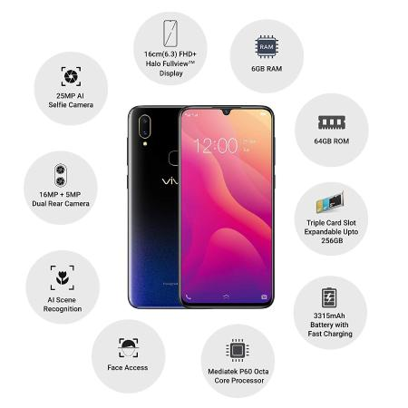

Vivo V11

Pengenalan
Vivo tidak pernah ragu dalam misinya untuk menghadirkan desain yang selalu impresif.
Kini, V11 didesain dengan tampilan baru, Ultra All Screen dengan rasio layar 19:9,
yang mampu memberikan tampilan yang sangat hidup. Pada bagian belakang,
terdapat lengkungan 3D yang indah pada V11 dan perpaduan warna yang tidak biasa,
memberikan kesan stylish, berkualitas dan berkelas.
V11 menjadi terlihat semakin memukau baik bagian belakang maupun bagian depan.
Spesifikasi
Network
Technology : GSM / HSPA / LTE
Launch
Announced : 2018, September
Status : Available. Released 2018, September
Body
Dimensions : 157.9 x 75 x 7.9 mm (6.22 x 2.95 x 0.31 in)
Weight : 156 g (5.50 oz)
Build : Plastic frame, glass body
SIM : Dual SIM (Nano-SIM, dual stand-by)
Display
Type : Super AMOLED capacitive touchscreen, 16M colors
Size : 6.41 inches, 100.9 cm2 (~85.2% screen-to-body ratio)
Resolution : 1080 x 2340 pixels, 19.5:9 ratio (~402 ppi density)
Platform
OS : Android 8.1 (Oreo); Funtouch 4.5
Chipset : Qualcomm SDM660 Snapdragon 660 (14 nm)
CPU : Octa-core (4x2.2 GHz Kryo 260 & 4x1.8 GHz Kryo 260)
GPU : Adreno 512
Memory
Card slot : microSD, up to 256 GB (dedicated slot)
Internal : 64/128 GB, 6 GB RAM
Main Camera
Dual : 12 MP, f/1.8, 1/2.8", dual pixel PDAF
5 MP, f/2.4, depth sensor
Features : LED flash, HDR, panorama
Video : 2160p@30fps, 1080p@30fps
Selfie camera
Single :25 MP, f/2.0, 1/2.8", 0.9µm
Features :HDR
Video :1080p@30fps
Sound
Loudspeaker :Yes
3.5mm jack :Yes
- Active noise cancellation with dedicated mic
Comms
WLAN :Wi-Fi 802.11 a/b/g/n/ac, dual-band, WiFi Direct, hotspot
Bluetooth :5.0, A2DP, LE, EDR
GPS :Yes, with A-GPS, GLONASS, BDS
Radio :FM radio
USB :microUSB 2.0, USB On-The-Go
Features
Sensors :Fingerprint (under display), accelerometer, proximity, compass
Battery
Non-removable Li-Po 3400 mAh battery
Charging :Fast battery charging 18W
Misc
Colors :Starry Night, Dazzling Gold, Nebula, Supernova Red
Price :About 350 EUR
Tests
Performance :Basemark OS II: 2625 / Basemark OS II 2.0: 2218
Basemark X: 18818
Display :Contrast ratio: Infinite (nominal), 4.113 (sunlight)
Camera :Photo / Video
Loudspeaker :Voice 70dB / Noise 73dB / Ring 80dB
Audio quality:Noise -92.7dB / Crosstalk -92.1dB
Battery life:Endurance rating 98h
Review
Jitendra
: I want to know will Vivo 11 will work out of India ?
I had bed experience in Redme. It was not working in USA.
the reason is it was made it India.